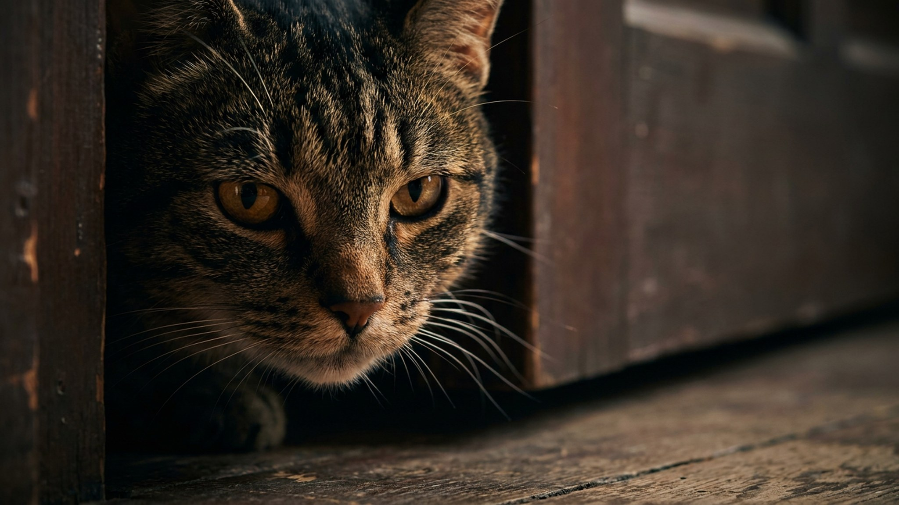

Стоит закрыть дверь в комнату — и кошка уже скребёт под ней, подсовывает лапу и требовательно мяукает, особенно в четыре утра. Это не вредность и не месть. За закрытой дверью кошка теряет то, что для неё по-настоящему важно, — и ведёт себя ровно так, как подсказывает инстинкт. Разберём причину и как убрать привычку, не воюя с кошкой.
🐾 Первая помощь — всегда под рукой
AnimaLife подскажет, что делать в тревожной ситуации с питомцем ещё до визита к врачу. Откройте в один тап.
Кошка — территориальный хищник, которому нужен контроль над своим пространством и путями отхода. Закрытая дверь означает сразу несколько потерь:
Ночью вы закрываете спальню — и кошка остаётся по ту сторону от главного объекта привязанности. Плюс на неё давят естественные пики активности на рассвете и закате: именно тогда предок домашней кошки выходил на охоту. А скрести и мяукать «работает»: если дверь хоть раз открылась в ответ, поведение закрепилось как надёжный способ добиться своего. Кошка не мстит и не вредничает — она просто использует то, что однажды сработало.
🐾 Экономьте на лишних визитах к врачу
Сначала спросите AI-ветеринара в AnimaLife — часто этого достаточно, чтобы понять, нужен ли визит к врачу.
🐾 Понравился разбор?
Подпишитесь на канал — каждый день разбираем по одному тревожному симптому у кошек и собак: что в пределах нормы, а когда пора к врачу. Подпишитесь, чтобы не пропустить разбор, который может спасти здоровье вашего питомца.
Одержимость дверями почти всегда про контроль и привязанность, а не про упрямство. Дайте кошке богатую доступную территорию, предсказуемый режим и последовательность — и «концерты под дверью» сойдут на нет за пару недель.